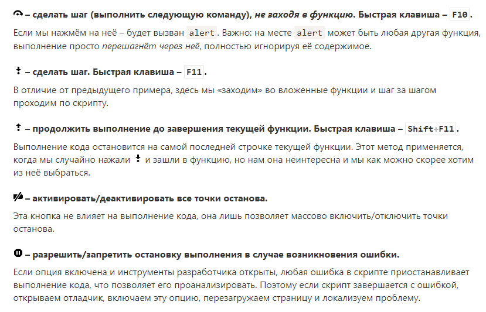
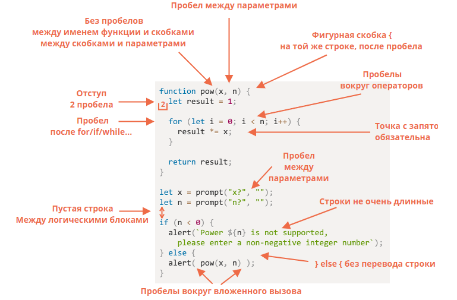

Back to module 1
Обозначения:
3.1 Отладка в браузере Chrome (Chrome DevTools)
1) В зоне Resources (Ресурсы) показаны файлы HTML, JavaScript, CSS, включая изображения,
используемые на странице. Здесь также могут быть файлы различных расширений Chrome.
2) Зона Source показывает исходный код файла.
3) Зона Information and control (Сведения и контроль) отведена для отладки.
В ней можно вводить команды и выполнять их клавишей Enter.
Точка останова – это участок кода, где отладчик автоматически приостановит исполнение JavaScript.
Щелкнуть слева, чтобы поставить точку останова. Справа в Breakpoints находится список точек останова.
Пока исполнение поставлено «на паузу», мы можем просмотреть текущие значения переменных, выполнить команды в консоли, одним словом, мы выполняем отладку кода.
Для начала отладки (после того, как мы поставили точки останова) проще всего перезагрузить страницу.
1) Watch показывает текущие значения выражений.
2) Call Stack показывает последовательность вызовов функций.
3) Scope показывает текущие переменные.
На кнопку "плей", можно шагать по breakpoints.
Если нужно что-то вывести в консоль из кода, применяется функция console.log.
3.2 Советы по стилю кода
Шпаргалка с правилами синтаксиса (подробнее смотрите ниже по тексту):
В однострочных инструкциях - не нужны. В многострочных - обязательны.
Лучше всего разбивать их на более короткие. Обычно это 80 или 120 символов.
1) Горизонтальные отступы: два или четыре (Tab) пробела.
2) Вертикальные отступы: пустые строки для разбивки кода на «логические блоки».
Точки с запятой должны присутствовать после каждого выражения, даже если их, казалось бы, можно пропустить.
Уровней вложенности должно быть немного (для этого часто используют if с return).
1) Объявить функции перед кодом, который их вызовет.
2) Сначала код, затем функции.
3) Смешанный стиль: функция объявляется там, где она используется впервые.
Автоматизированные средства проверки, так называемые «линтеры» – это инструменты,
которые могут автоматически проверять стиль вашего кода и вносить предложения по его улучшению.
Проверка стиля может также найти программные ошибки, такие как опечатки в именах переменных или функций.
Из-за этой особенности использовать линтер рекомендуется, даже если вы не хотите придерживаться какого-то конкретного «стиля кода».
ESLint – пожалуй, самый современный линтер.
Буду писать название строки и коммент.
1. Нет пробела между аргументами
2. Фигурная скобка на новой строке
3. Нет пробелов от =
4. Нет пробелов, содержимое скобок вынести на новую строку
5. Ок
6. Ок
7. Ок
8. Пробелов нет
9. Нет пробелов
10. Фигурная скобка на новой строке
11. Ок
12. Ок
13. else лучше после окончания фигурной скобки выше
14. Должно быть на одном уровне с else
15. Пробелов нет
16. Ок
3.3 Комментарии
Новички склонны использовать комментарии, чтобы объяснять, «что делает код».
В хорошем коде количество «объясняющих» комментариев должно быть минимальным.
Код должен быть таким, чтобы его можно было понять без комментариев.
Важно то, что написано. Но то, что не написано, может быть даже более важным, чтобы понимать происходящее. Почему задача решена именно этим способом? Код не даёт ответа.
3.4 Ниндзя-код
var $;
_ = $ ? $ > 0 ? Math.max(0, len +$) : $ : 0;
var function = __функция...;